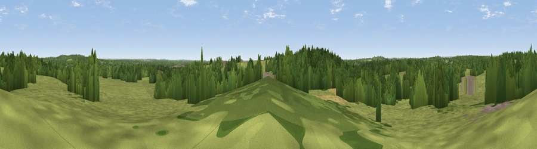

Viewpoint near Woodlands
#38018 in England · top 66% of its area beats it · near WoodlandsWhere it is
The exact computed spot (SU 06625 08225). Click the marker for map links.
The view, rendered

A 360° render of this exact spot computed from the terrain model, tree cover and land cover — summer colours, afternoon light, calibrated against photographs of famous viewpoints. Real trees, hedges and buildings will differ in detail.
The panorama
Grey silhouette: terrain skyline in each direction (720 bearings, Earth curvature and refraction included). Dashed green: skyline with trees (+15 m) and buildings (+8 m) as obstacles. Blue strip: how far the ground is visible on each bearing.
Where the view opens
Wedge length = distance to the farthest visible ground on that bearing (vegetation-aware). Rings at 10, 25 and 50 km.
What fills the view
59% grassland · 36% woodland · 3% cropland · 2% built-up
Angular shares of the visible panorama (visual magnitude), not map area. Landscape diversity 0.38 (0–1 Shannon).
Key numbers
More beautiful places nearby
The staircase of upgrades: each row has a higher view potential than everything closer. Driving times are estimates from straight-line distance, calibrated against real road routing — check an actual route before setting out.
| Place | Direction | Drive | Score |
|---|---|---|---|
| Viewpoint near Verwood | ENE · 3 km | ~7 min | 41.8 |
| Viewpoint near Cranborne | N · 5 km | ~10 min | 46.2 |
| Chalbury Hill | WSW · 5 km | ~11 min | 56.5 |
| Viewpoint near Cranborne | NNW · 9 km | ~18 min | 65.0 |
| Trow Down | NW · 17 km | ~29 min | 67.5 |
| Monk's Down | NW · 18 km | ~32 min | 74.4 |
| Viewpoint near Berwick St John | NW · 19 km | ~32 min | 78.2 |
| Viewpoint near Studland | S · 27 km | ~43 min | 80.9 |
50.87349, -1.90721 · source: screening · position refined by local search. Computed location — check access rights before visiting.